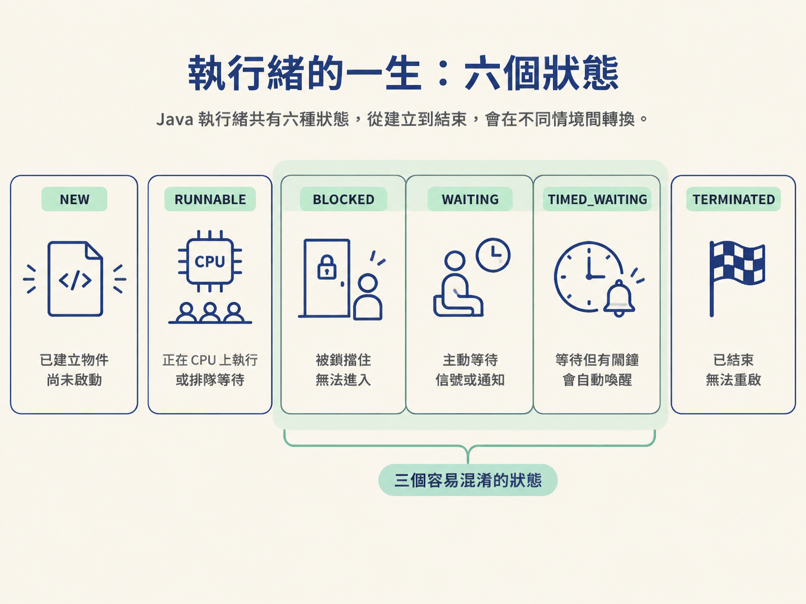
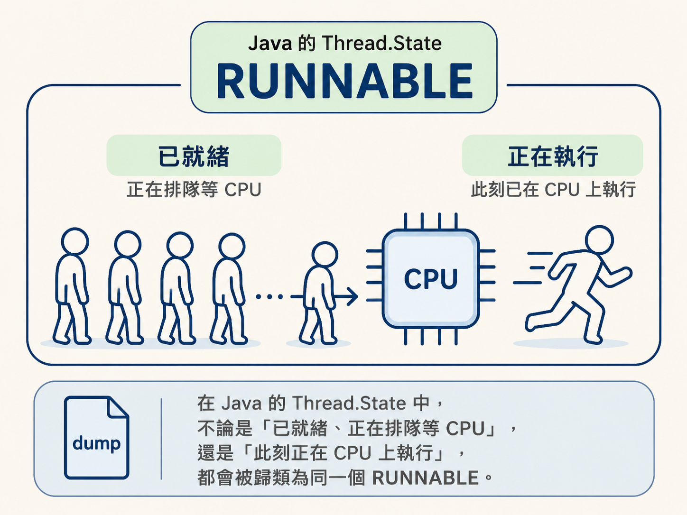
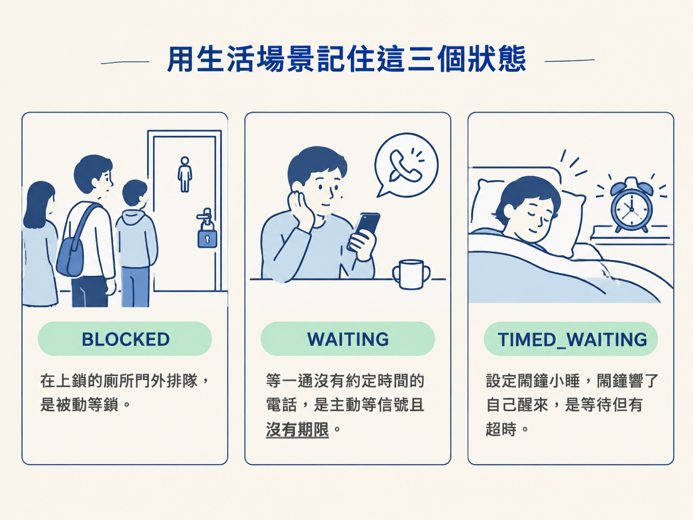
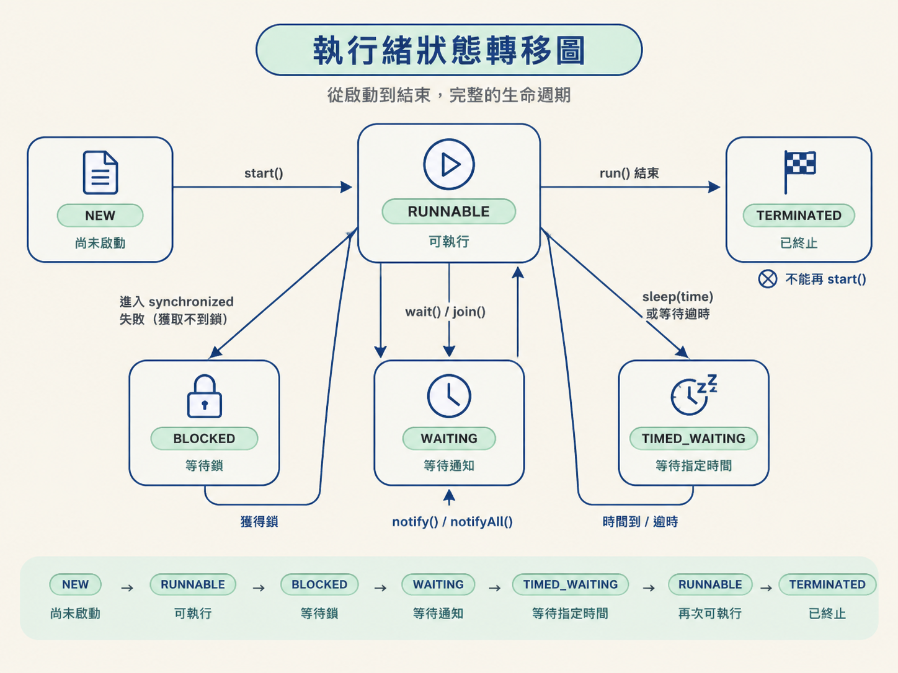

看完這一節，你應該能說出 Java 六個執行緒狀態及其觸發條件，也能分辨 RUNNABLE 為什麼同時包含作業系統層面的「就緒」與「運行」，以及 BLOCKED、WAITING、TIMED_WAITING 到底差在哪裡。
線上服務突然卡住，你請運維抓了一份執行緒 dump。打開之後，幾十個執行緒顯示 WAITING，另外幾個顯示 BLOCKED。你知道它們一定在「等」某件事，卻一時說不清楚：這是卡在鎖上，還是在等另一個執行緒通知？
這種問題難查，正是因為「等」不是單一狀態。Java 把執行緒從建立到結束分成六種狀態，其中有三種都表示執行緒目前沒有繼續執行，但它們等待的對象和被喚醒的方式完全不同。
如果分不清這些差異，看到 WAITING 或 BLOCKED 時，就很難判斷服務究竟是鎖競爭、等待通知，還是單純在等待一段時間或外部工作完成。這一節先把六個狀態和它們之間的關係釐清，因為後面談執行緒池、鎖，以及等待與通知時，都會反覆用到這組分類。
先把整體輪廓看清楚。一個 Java 執行緒從被 new 出來，到執行結束，會落在下面六種狀態之一：
| 狀態 | 關鍵特徵 | 典型觸發 |
|---|---|---|
NEW | 物件已建立，但還沒有啟動 | new Thread() 之後 |
RUNNABLE | 正在執行，或已準備好、正在等待 CPU | 呼叫 start() |
BLOCKED | 被動等待一把鎖 | 進入 synchronized 失敗 |
WAITING | 主動掛起，等待別人喚醒 | wait()、join() |
TIMED_WAITING | 等待，但設定了時間限制 | sleep(time)、wait(time) |
TERMINATED | 已經結束，不能重新啟動 | run() 執行完 |
這張表可以先當成地圖。真正容易混淆的，是中間三個「目前沒有繼續執行」的狀態：BLOCKED、WAITING 和 TIMED_WAITING。接下來逐一看它們為什麼會出現。

當你寫下 new Thread(runnable)，Java 只是先在堆記憶體中建立一個 Thread 物件。它還沒有真正啟動，也還沒有和作業系統底層的執行環境連接起來。此時呼叫 getState()，得到的就是 NEW。
只有呼叫 start() 之後，JVM 才會請作業系統建立對應的執行環境，讓這個執行緒進入可以被調度的狀態。要注意，start() 並不是直接在目前的執行緒裡呼叫 run()。
它比較像是把選手送進候場區，而不是保證選手立刻上場。至於什麼時候真正取得 CPU、開始執行 run()，則由作業系統的排程器決定。因此，同一段程式執行兩次，執行緒之間的交錯順序可能並不相同。
RUNNABLE 是最容易讓人誤判的狀態。在作業系統層面，「已經準備好、正在排隊等 CPU」和「此刻正在 CPU 上執行」通常是兩個不同的概念；但 Java 的執行緒狀態沒有把它們拆開，而是都歸在 RUNNABLE。
所以，執行緒 dump 顯示 RUNNABLE，不代表它此刻一定正在 CPU 上執行。它也可能只是已經準備好了，正在等待作業系統分配時間片。
對 JVM 來說，只要執行緒不是正在等待鎖、等待通知，或等待一段指定時間，就仍然算是「可執行」的狀態，會顯示為 RUNNABLE。這也解釋了面試中常見的問題：為什麼看到執行緒是 RUNNABLE，服務卻好像沒有動？答案可能是它只是還沒被排到 CPU，而不是已經真的在持續執行。

這三種狀態都會讓執行緒暫停往下走，但停下來的原因和恢復條件不同。排查卡頓時，如果把它們當成同一種「等待」，很容易走錯方向。
BLOCKED 用來描述執行緒正在等待一把排他鎖。當執行緒想進入由 synchronized 修飾的方法或程式碼區塊，卻發現鎖已經被其他執行緒持有，它就會進入 BLOCKED。
這時候的執行緒就像站在已經上鎖的門外。它不是自己決定要休息，而是因為進門需要的鎖被別人拿走了，只能等持有鎖的執行緒離開臨界區、釋放鎖之後，再嘗試取得鎖。
因此，如果執行緒 dump 裡出現大量 BLOCKED，優先應該往鎖競爭的方向查：可能是某個臨界區執行太久，也可能是太多執行緒同時搶同一把鎖。
WAITING 的情況不同。這次是執行緒自己主動停下來，而且沒有設定超時。它會一直等待，直到另一個執行緒明確地把它喚醒。
常見的觸發方式包括 Object.wait()、Thread.join() 和 LockSupport.park()。對應的喚醒方式則包括其他執行緒呼叫 notify()、notifyAll() 或 unpark()。
這裡最重要的關鍵是「沒有期限」。如果始終沒有人發出正確的通知，它就可能一直等下去。因此，當服務卡住，而 dump 裡有一群執行緒停在 WAITING，就要進一步檢查：是不是漏了 notify，或通知的對象與時機不正確。
TIMED_WAITING 和 WAITING 很像，差別在於它設定了等待時間。即使沒有其他執行緒發出通知，時間到了，執行緒也會自行醒來。
常見的觸發方法都帶有時間參數，例如 Thread.sleep(time)、Object.wait(time)、Thread.join(time) 和 LockSupport.parkNanos()。
可以用三句話記住它們：
BLOCKED：門被鎖住了，被動等別人釋放鎖。WAITING：主動等一個信號，而且沒有期限。TIMED_WAITING：主動等待，但設定了時間，時間到就會醒來。如果名詞還是容易混淆，可以把三種狀態想成三種生活中的等待。
第一種是排隊上廁所。門被裡面的人鎖住，你只能站在門外，等對方出來把門打開。這對應 BLOCKED：你被一把鎖擋住，是被動等待。
第二種是等一通沒有約定時間的電話。對方只說「我晚點打給你」，卻沒有說幾點。你只能一直等，直到對方真的打來。這對應 WAITING：等待一個明確信號，但沒有時間上限。
第三種是設定鬧鐘小睡。就算沒有人叫你，鬧鐘響了也會醒來。這對應 TIMED_WAITING：同樣是在等待，但手上多了一個會自動響起的鬧鐘。

當 run() 正常執行完，或因為未被捕捉的例外而中斷，執行緒就會進入 TERMINATED。這代表它的生命週期已經結束，不能再被重新啟動。
如果你對已經結束的執行緒物件再次呼叫 start()，Java 會直接丟出例外。這也是執行緒池選擇「複用執行緒」而不是「重用同一個已結束的執行緒物件」的原因。
執行緒池中的執行緒完成一個任務後，通常會回到等待新任務的狀態，而不是讓執行緒真正結束。這樣才能持續接手後續工作。
從生命週期來看，NEW 是尚未啟動，呼叫 start() 後進入 RUNNABLE。執行期間，如果遇到鎖、等待通知或指定時間，就可能分別進入 BLOCKED、WAITING 或 TIMED_WAITING。條件滿足後，它們又會回到可執行的狀態；工作完成後，最後進入 TERMINATED。

因此，看到 dump 裡的狀態時，不要只看「它有沒有在跑」，還要追問「它正在等什麼」：
BLOCKED，先查是不是卡在 synchronized 鎖競爭。WAITING，先查是不是在等待某個執行緒發出通知。TIMED_WAITING，先看它設定了多久的等待時間。RUNNABLE，也不要直接認定它正在使用 CPU，因為它可能只是排隊等候調度。Java 執行緒有六個狀態：NEW、RUNNABLE、BLOCKED、WAITING、TIMED_WAITING、TERMINATED。RUNNABLE合併了作業系統層面的「就緒」與「運行」；只要執行緒不是在等待鎖、信號或時間，通常都會歸在這個狀態。三種最容易混淆的等待則要分清楚：BLOCKED是被動等待synchronized鎖，WAITING是主動且無期限地等待顯式喚醒，TIMED_WAITING則是等待但設有超時，時間到了會自動醒來。
執行緒現在停在哪個狀態，能幫你判斷它卡住的原因；而執行緒池、鎖，以及等待通知，則會決定它接下來如何在這些狀態之間移動。下一節會從 new Thread 的真實成本談起，說明為什麼需要執行緒池，以及執行緒數量到底該怎麼決定。